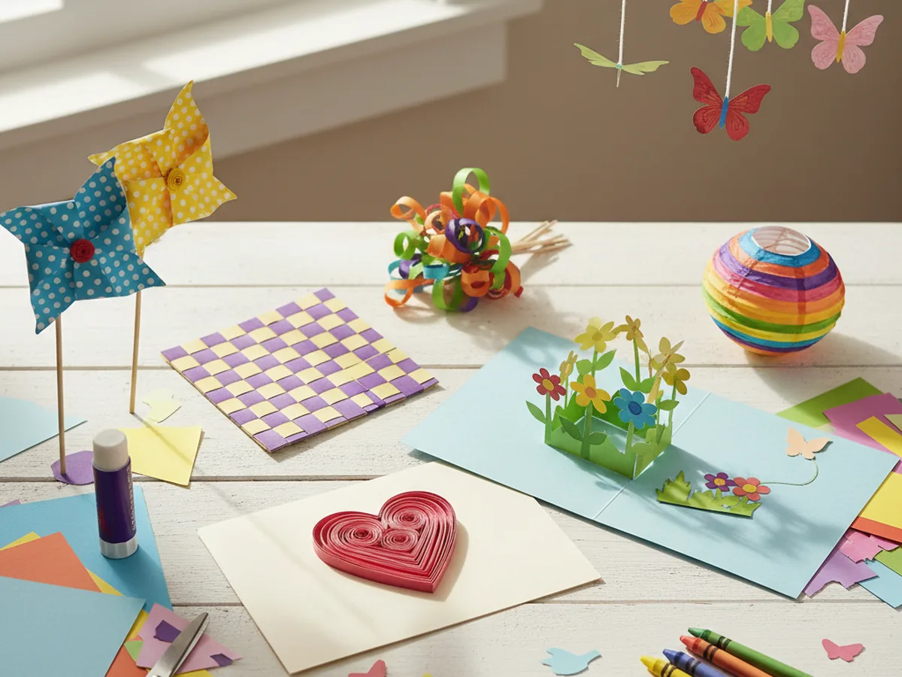
Paper is one of those magical supplies that turns into almost anything with a little folding, gluing, and imagination. With just a stack of colored sheets and a pair of safety scissors, your kitchen table can become a tiny art studio for the afternoon. These creative craft paper ideas are designed to feel doable for beginners, low on mess, and full of those sweet, bright moments that make crafting with kids so worth it. ✂️
This list pulls together 20 fresh, fun, and colorful creative craft paper projects you can do at home with your children. Some are calm and quiet, perfect for a rainy afternoon, while others are bright and lively for sunny weekends. Each one is beginner-friendly, uses simple supplies, and gives you a finished result your child will feel proud of. 🎨
What You'll Need
Most of these creative craft paper ideas use the same handful of cozy supplies, so a quick gather of these basics will set you up for the whole list.
- Crayola Construction Paper 240 Count, a generous rainbow pack to cover any color you need.
- Neenah Bright White Cardstock 100 Sheets, sturdy paper perfect for cards, mobiles, and frames.
- Craft Craze Tissue Paper 100 Sheets, soft colorful tissue ready for stained glass and pom-poms.
- Elmer's Disappearing Purple Glue Sticks 6-Pack, mess-free sticks that show kids exactly where they spread glue.
- Elmer's Washable School Glue 4 oz 6-Pack, a gentle liquid glue for layering and detail work.
- Fiskars 5 inch Blunt-Tip Kids Scissors 3-Pack, safe and easy to use for little hands.
- Crayola Ultra Clean Washable Markers 10 Count, vibrant colors that wash off skin and clothes easily.
- Crayola Colored Pencils 50 Count, a wide rainbow set for drawing details on any project.
- A ruler and a pencil, for measuring and sketching shapes before cutting.
20 Creative Craft Paper Ideas to Make with Your Kids
1. Paper Quilled Heart Card
Roll thin strips of pink and red paper into tight little coils, then arrange and glue them inside a heart outline drawn on a folded white card. Quilling looks impressive but is genuinely easy once your child gets the hang of rolling the strips. This is one of the prettiest creative craft paper projects for Mother's Day, Valentine's Day, or any sweet little note for grandma. The finished card has so much texture you almost want to touch it.
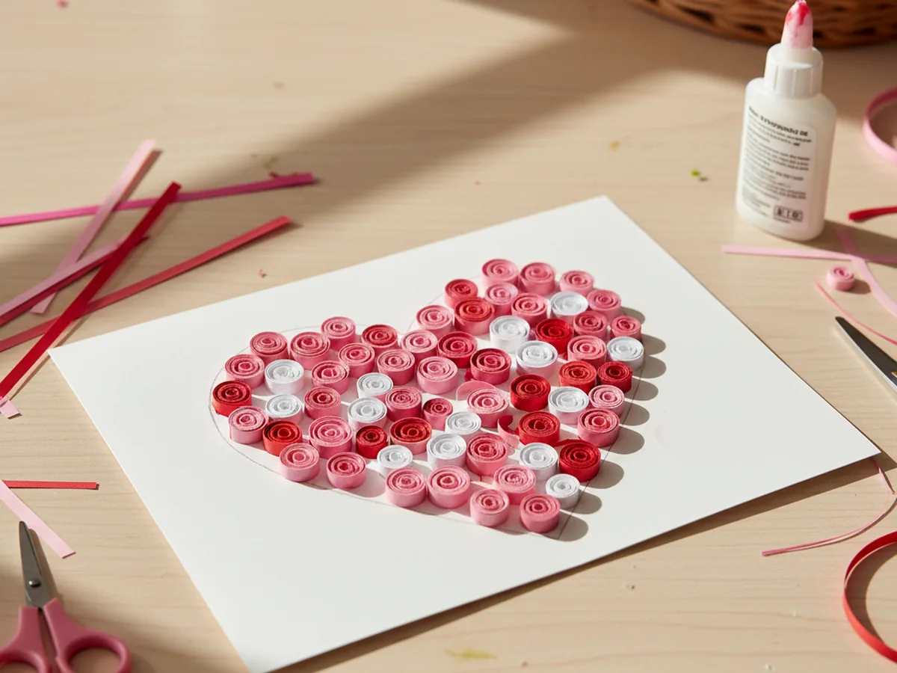
2. Pop-Up Paper Garden Card
Fold a piece of cardstock in half and cut two short slits to fold inward, creating a hidden pop-up shelf inside. Glue colorful paper flowers and a little grassy strip onto the shelf so a tiny garden bursts open every time the card is opened. Kids absolutely love the surprise effect. This is one of the most playful creative craft paper ideas in this list and feels almost like magic the first time the garden pops up.
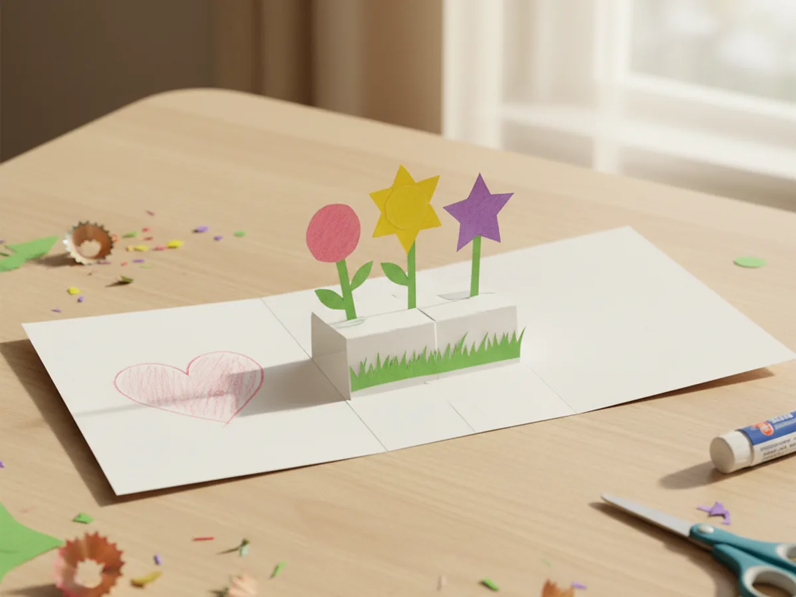
3. Tissue Paper Stained Glass Window
Cut a frame shape from black construction paper, then layer torn pieces of bright tissue paper across a sheet of clear contact paper inside the frame. Tape the finished piece to a sunny window and watch the colors glow like a real stained glass panel. The way the light shines through is enchanting for little ones. This is one of the dreamiest creative craft paper projects when you want a quiet, calm activity that feels artistic.
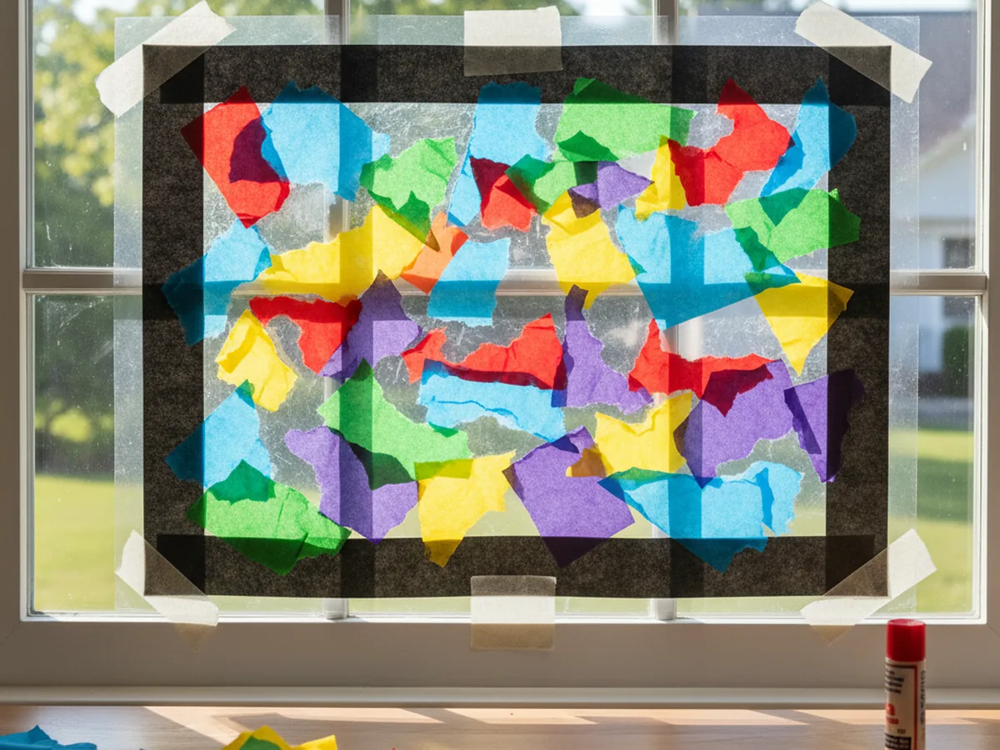
4. Torn Paper Mosaic Animal
Sketch a simple animal shape like a turtle, fish, or bird onto a sheet of cardstock, then tear small pieces of colored construction paper and glue them inside the outline like a mosaic. Tearing instead of cutting makes the project soothing and toddler-friendly. The finished animal has a beautiful textured, painterly look. This is one of the most relaxing creative craft paper ideas for younger kids who love working with their hands.
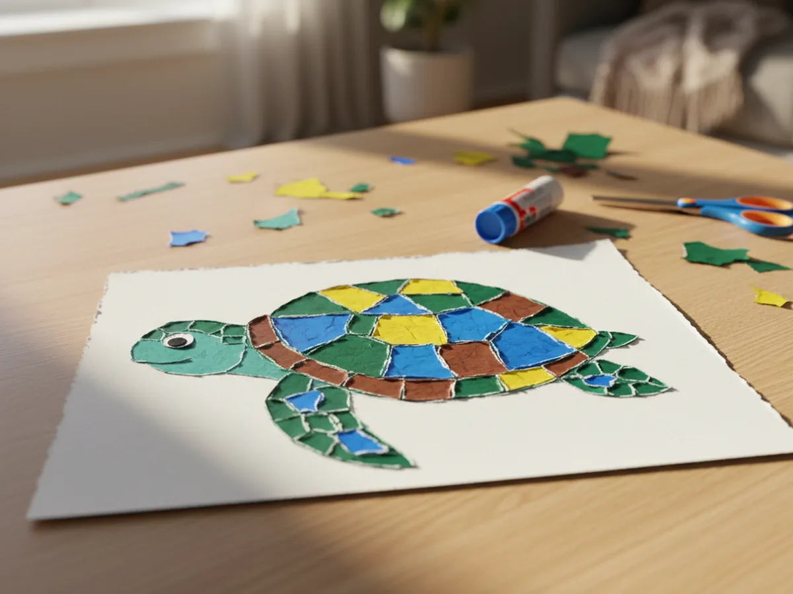
5. Origami Paper Animal Friends
Use square sheets of bright origami paper to fold simple animal shapes like a dog, cat, frog, or fox. The classic four-step fox or frog is a wonderful first folding project for kids around five and up. Pair the finished animals with little googly eyes and a paper meadow background for an easy display. Folding is one of the most calming creative craft paper activities and feels like a quiet little win every time a new shape appears.
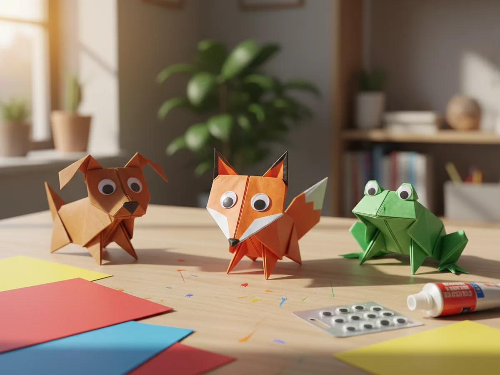
6. Accordion Paper Caterpillar
Fold a long green strip of paper back and forth into a tight accordion shape, then glue it onto a piece of cardstock with a round face, two tiny antennae, and a sweet smile drawn on. The accordion gives the caterpillar a bouncy, three-dimensional body that wiggles a little when you tap it. Kids love how it pops off the page. This is one of the bounciest creative craft paper ideas and a great introduction to paper folding.
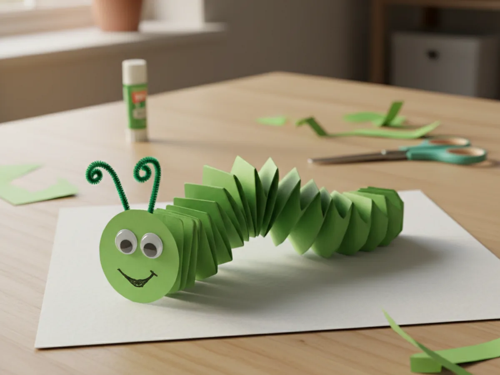
7. Woven Paper Strip Placemat
Cut a piece of construction paper into thick strips, weave them together with a second sheet cut into long ribbons, then trim the edges and add a sticker border. The result is a real little woven placemat your child can use at the table for lunch. Weaving teaches patience and pattern-making in the sweetest way. As creative craft paper projects go, this one is wonderfully practical and instantly useful.
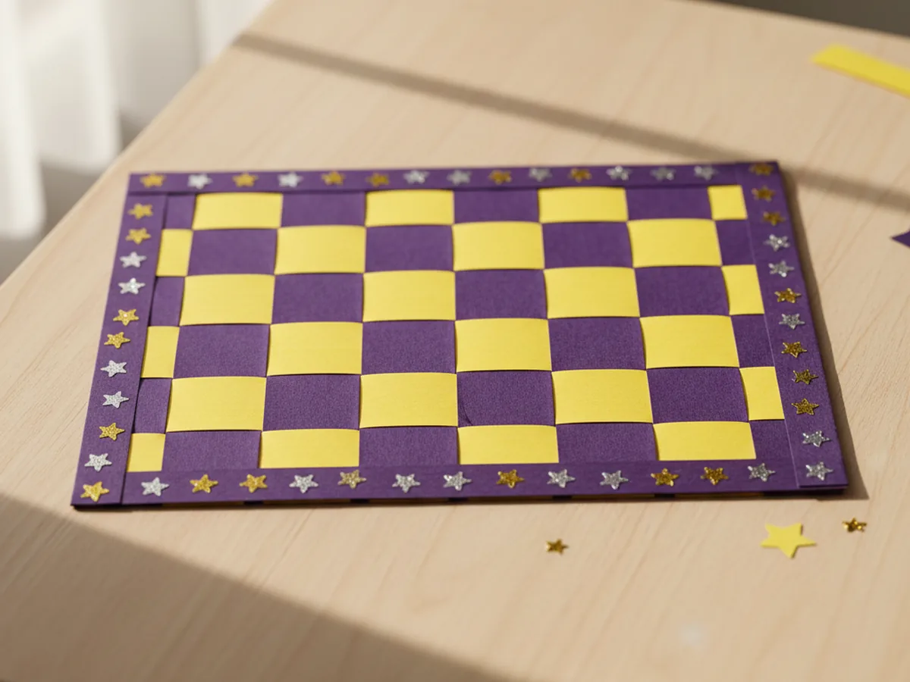
8. Layered Paper Cloud Mobile
Cut three or four cloud shapes from white cardstock and stack them with a little fluff of cotton between each layer, then thread a string through the center and tie raindrops or rainbows to dangle below. Hang the finished mobile near a window so it sways gently in the breeze. The layered shapes give the clouds real depth. This is one of the dreamiest creative craft paper ideas for nursery decor.
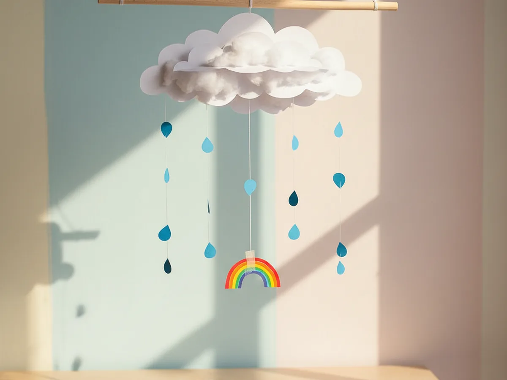
9. Construction Paper City Skyline
Cut tall rectangles of different sizes from gray, blue, and black construction paper to form a row of buildings, then add little square paper windows in yellow to look like glowing lights. Glue the skyline along the bottom edge of a sunset-colored background sheet for a striking framed picture. The finished cityscape looks impressive on a wall. This is one of the most artistic creative craft paper projects for older kids who love a focused little design challenge.
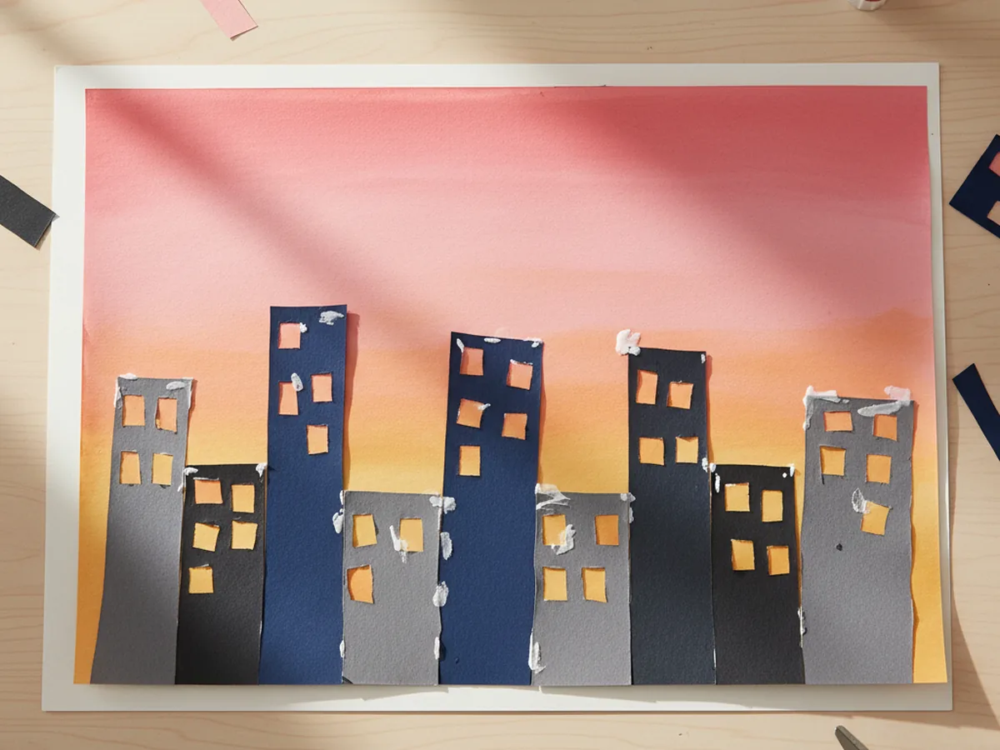
10. Crinkled Paper Texture Tree
Crinkle small pieces of green tissue paper into tiny balls and glue them as a leafy canopy on top of a brown construction paper trunk. Add a few red paper apples or pink paper blossoms for a seasonal twist. The crinkled texture makes the tree feel alive and fluffy, far more dimensional than a flat drawing. This is one of the most touchable creative craft paper ideas your toddler will keep wanting to pat.
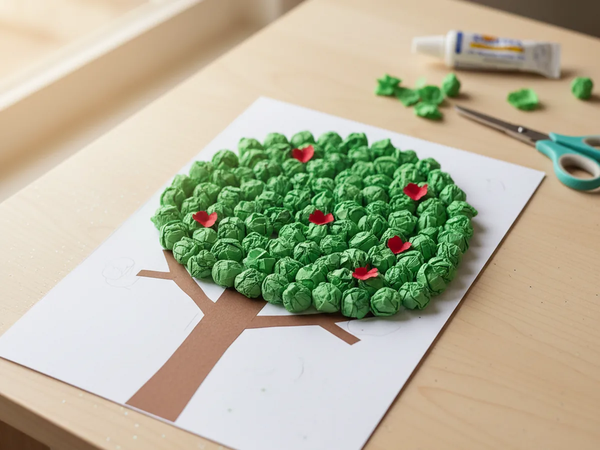
11. Paper Bag Puppet Theater
Decorate small paper lunch bags into characters with paper face pieces, yarn hair, and felt costumes for instant hand puppets. Set up a simple cardboard box stage and let your child put on a little show. The puppets are simple to make and endlessly fun to play with afterward. As creative craft paper ideas go, this one keeps giving for hours after the craft itself is done.
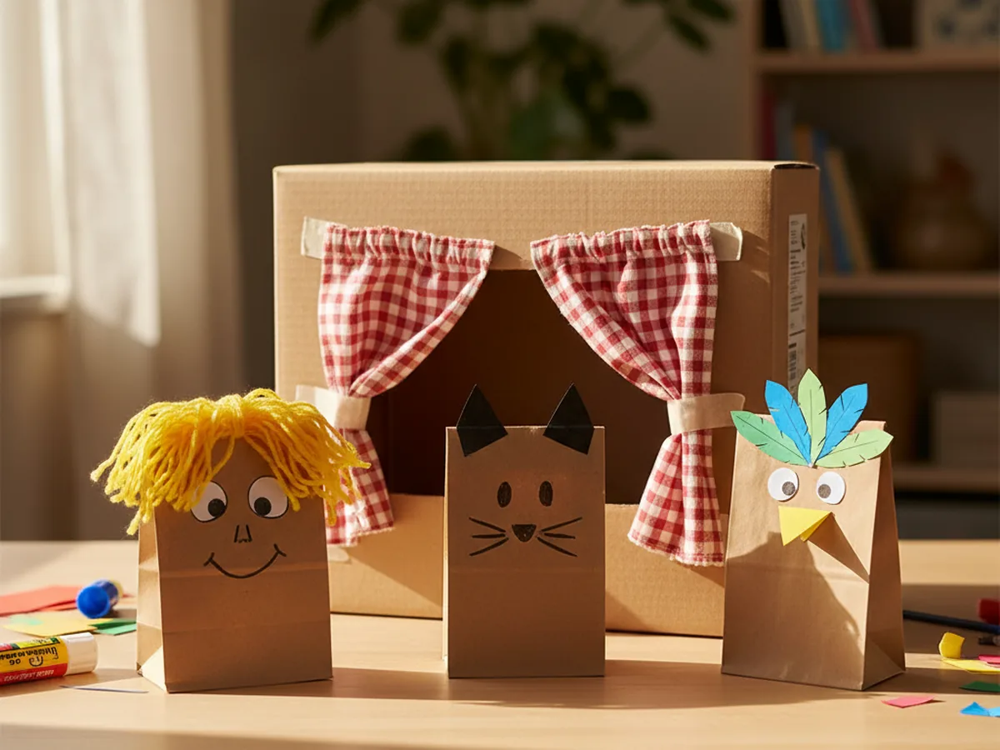
12. Paper Pinwheel Garden
Cut a square of patterned paper, fold it diagonally and snip toward the center from each corner, then fold every other point inward and pin it to a wooden stick. Watch your child run with their pinwheel spinning brightly in the breeze. Make a few in different colors to plant in the garden or a flower pot. This is one of the most joyful creative craft paper ideas because the result genuinely moves and delights.
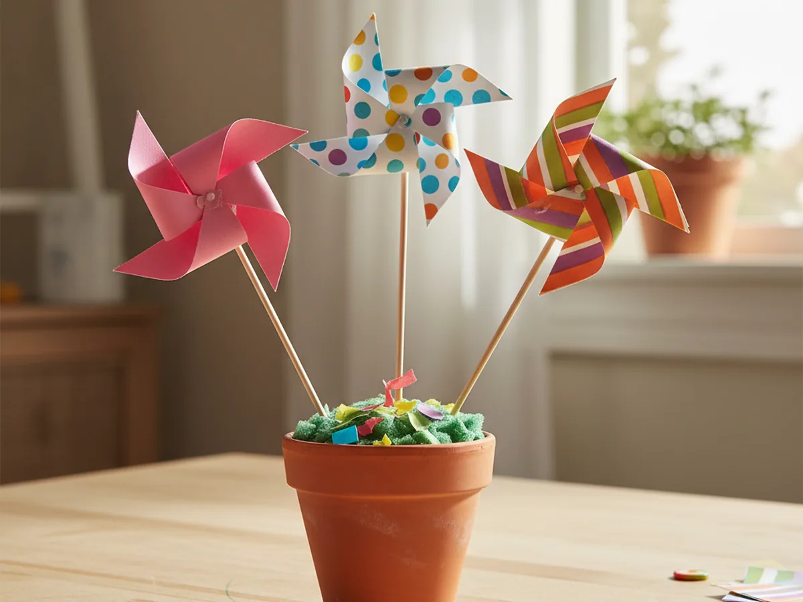
13. Curled Paper Strip Bouquet
Cut long strips of colorful paper, gently curl them by sliding the edge of safety scissors along each strip, then bunch them together at the base and glue inside a paper cone to form a bouquet. The curled strips look like real flower petals tumbling outward. This bouquet makes a gorgeous gift for a grandparent and stays pretty for months. As far as creative craft paper projects go, this one feels like a tiny piece of art.
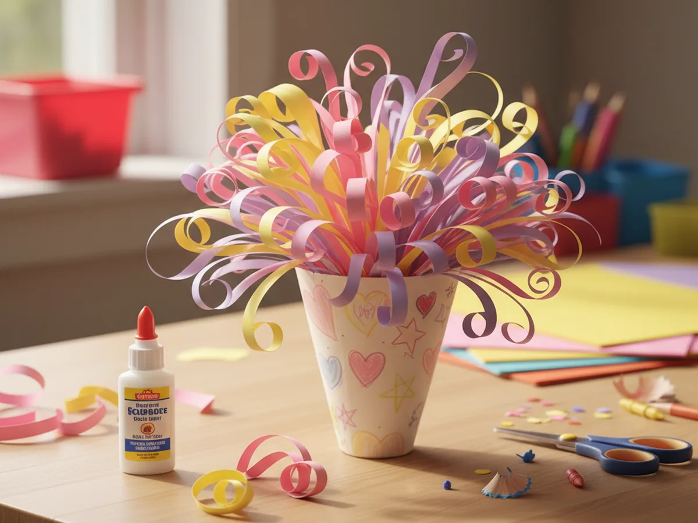
14. Paper Doily Snowflakes
Fold a round paper doily in half twice, then snip simple shapes out of the folded edges and unfold to reveal a snowflake. Hang the finished snowflakes in a window with thread for a soft, lacy look. This is a wonderfully calming activity that fills a winter afternoon with quiet little snips. The lacy texture makes each one slightly different from the next.
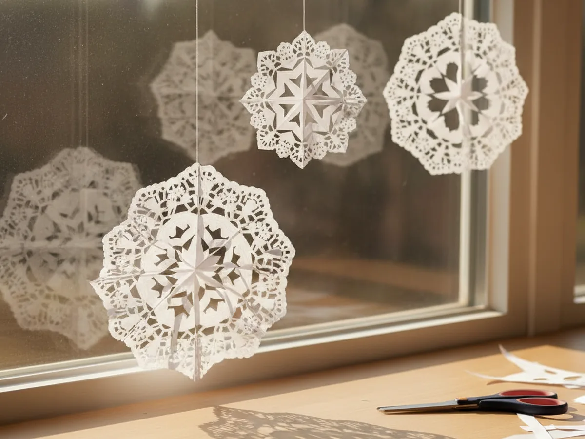
15. Geometric Paper Star Wall Art
Trace a star template onto patterned scrapbook paper and cut out several stars in different sizes, then arrange them in a flowing pattern on a piece of canvas-style cardstock. Frame the finished piece to hang above your child's bed. The mix of patterns and shapes feels modern and bright. This is one of the most styled creative craft paper ideas and looks ready for a children's room straight away.
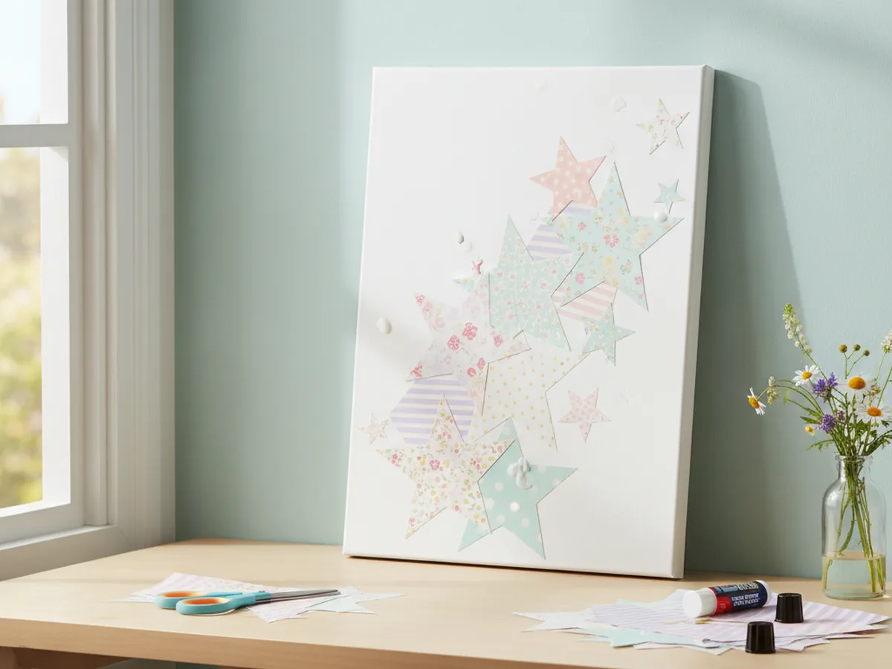
16. Paper Lantern with Cutout Shapes
Fold a sheet of colorful cardstock in half lengthwise and cut a row of slits from the folded edge toward the open edge, then unfold and roll the sheet into a tube and tape it closed to form a lantern. Add a paper handle on top and an LED tea light inside for an instant warm glow. This is one of the most enchanting creative craft paper ideas, especially for sleepover nights or summer evenings on the porch. ✨
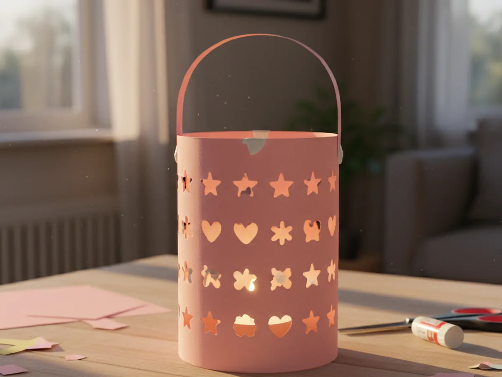
17. Magazine Collage Dream Sign
Flip through old magazines together and cut out images, words, and colors that capture your child's favorite things, then arrange and glue them onto a wood-style cardstock sign that says their name or a phrase like Dream Big. The collage becomes a personal little vision board for their bedroom wall. The conversation that happens while flipping through magazines is half the fun. This is one of the most personal creative craft paper projects on the whole list.
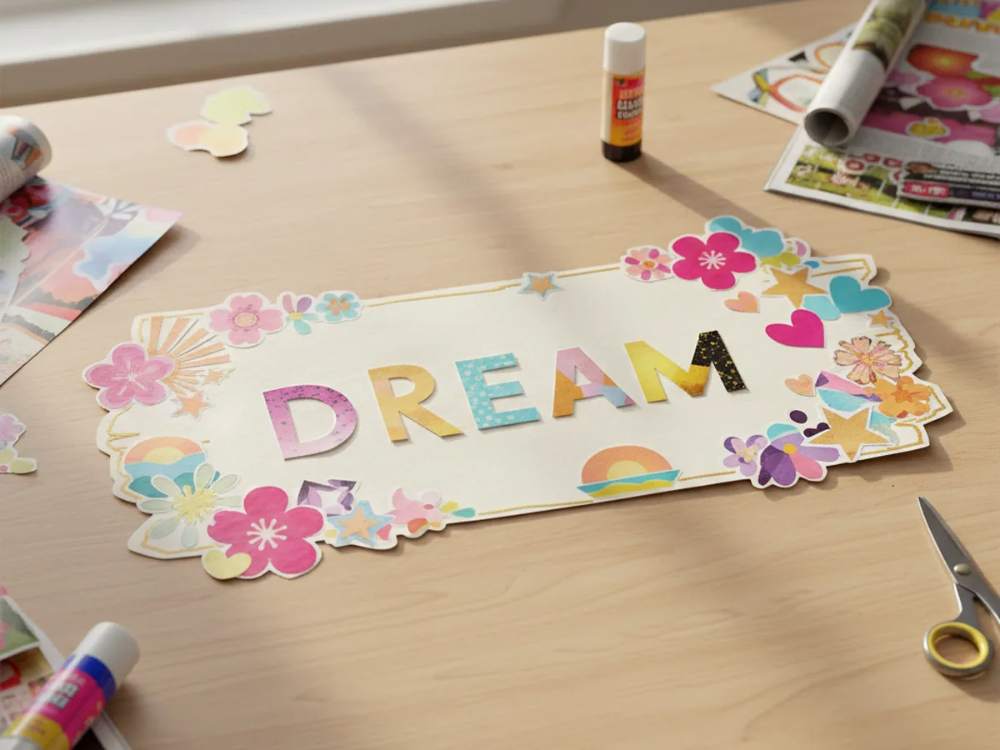
18. Confetti Paper Name Letters
Print or trace large bubble letters that spell your child's name on cardstock, then fill the inside of each letter with tiny torn paper confetti pieces glued in place. Each letter becomes a colorful celebration of texture and shape. Hang them as a wall garland or frame each letter individually. As far as creative craft paper ideas go, this is a perfect special-day project for a birthday or first day of school.
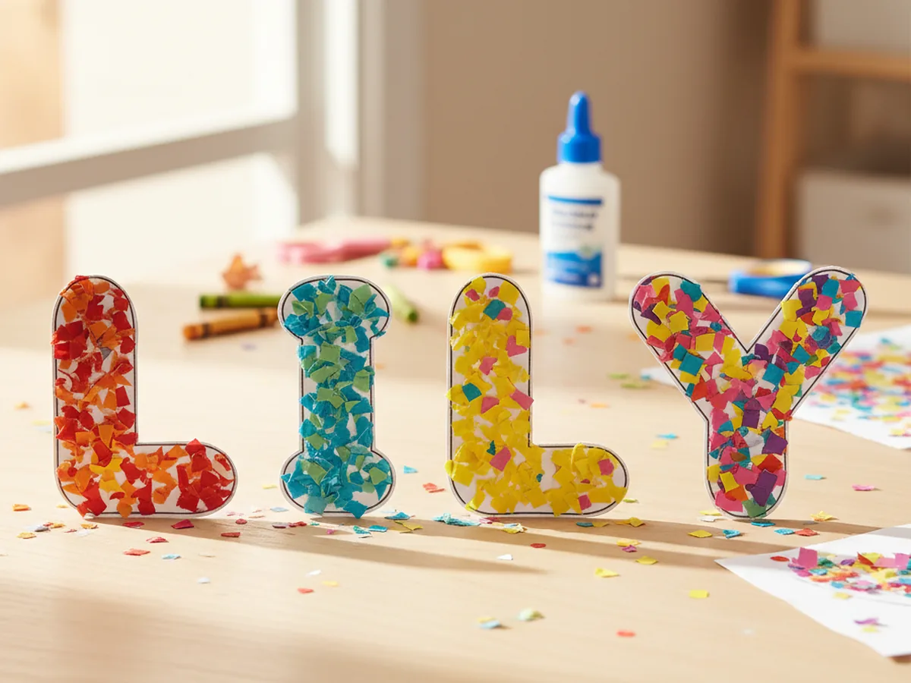
19. Layered Paper Butterfly Mobile
Cut two or three butterfly shapes in different sizes from patterned paper, stack them with the smaller ones on top, and pinch the centers to give the wings a lifted three-dimensional shape. Tie a thread to each butterfly and hang several from a wooden hoop or stick. The butterflies seem to flutter every time someone walks past. This is one of the most graceful creative craft paper projects for spring or a little girl's room. 🌈
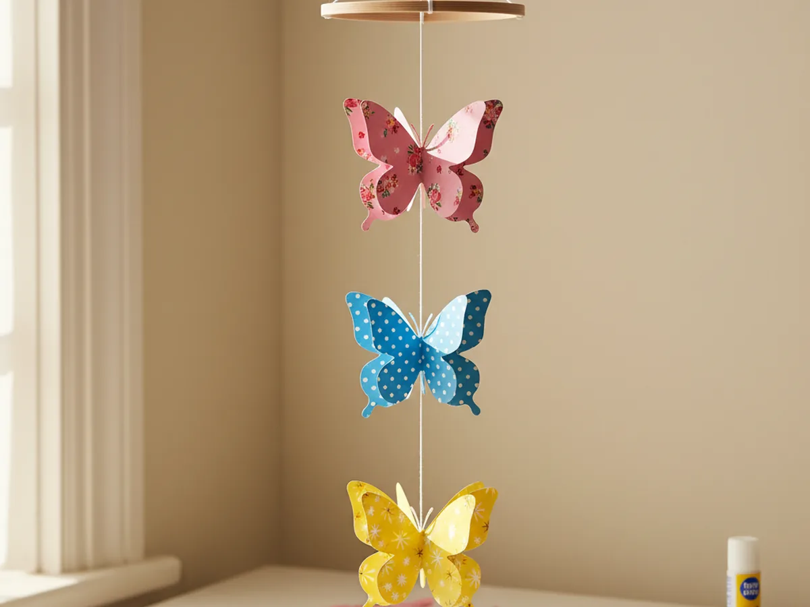
20. Marbled Paper Bookmarks
Fill a shallow tray with water and a few drops of liquid food coloring or marbling ink swirled gently across the surface, then dip a strip of cardstock briefly into the surface to pick up a swirl pattern. Lay the strips flat to dry, then trim them into bookmark shapes with a punched hole and a ribbon tassel. Each bookmark is wonderfully unique. As creative craft paper ideas go, this one feels almost like a tiny science experiment along the way.
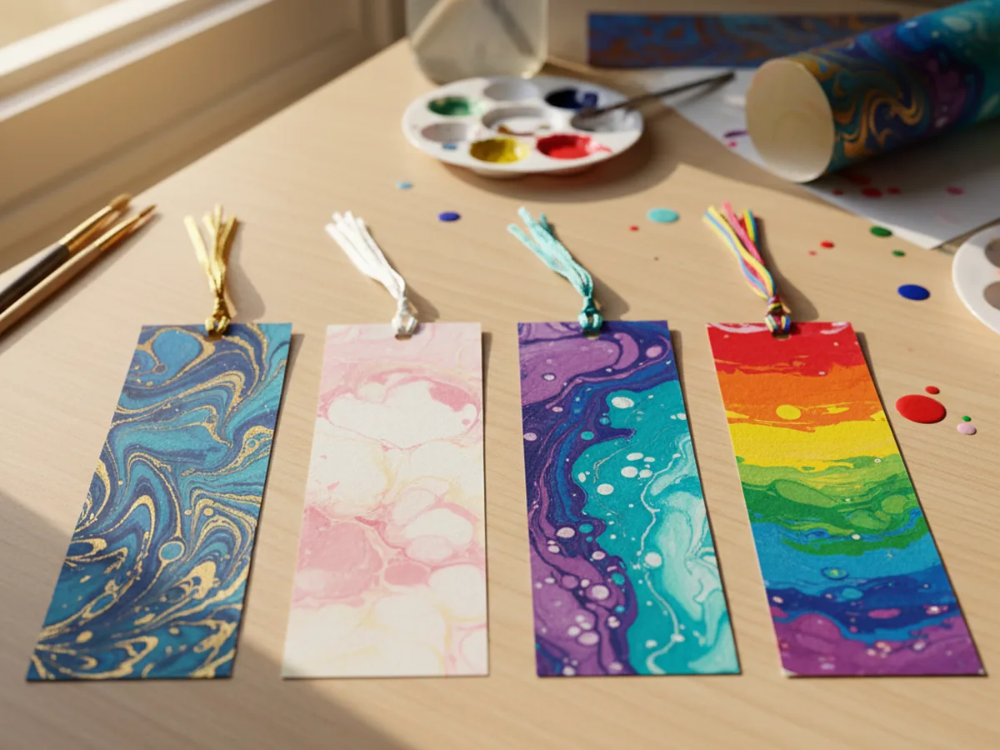
Final Thoughts
One of the loveliest things about creative craft paper projects is that the supplies are simple, the cleanup is easy, and the finished pieces somehow always feel a little extra special. A handful of colored sheets and a glue stick can turn a quiet afternoon into something your child remembers. These 20 ideas show how flexible paper can be, from quiet folding projects to bouncy three-dimensional builds.
Pick one idea that fits your child's mood today, gather your paper and glue, and enjoy the time you spend making it together. The finished crafts are sweet, but the warm little moments along the way are the real keepsake. 💛
More Crafts You'll Love
If this list inspired you, there are plenty more cozy paper craft ideas waiting for you.
Happy crafting, and enjoy every bright little moment you make together.